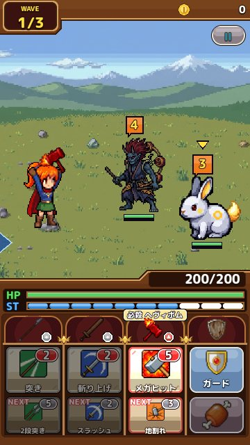

戦いの基本：ターンとカウント
敵の頭の上の数字（カウント）の読み方、ST の回し方、画面のどこを見ればいいかを、具体的な場面でくわしく解説します。 更新：2026-11-23
1 ターンの流れ
キシドラ！の戦いはターン制です。1 ターンは次の順に進みます。
- 主人公が 1 回行動する（スキルで攻撃する・ためるスキルを使う・肉を食べる）
- すべての敵のカウント（頭の上の数字）が 1 つ減る
- カウントが 0 になった敵が「!!」を出し、少しためてから攻撃してくる
- 攻撃が終わった敵のカウントは、その敵の決まった数にもどる
つまり、カウントは「あと何回こちらが行動したら攻撃が来るか」を表しています。カウントが 1 の敵がいたら、次の行動のあとに攻撃が来るという合図です。逆に、カウントが 3 の敵なら、あと 2 回は安心して攻撃に集中できます。
カウントの数は、敵の大きさと種族で決まります。地上のふつうの大きさ（S）の敵は基本が 3、少し大きい M の敵は 4 です。ゴーレム・カメカメ・カブリモノ・プランこのようなのんびりした種族は 1 多く、ファビットやケモノのようなすばやい種族は 1 少なくなっています。雑魚と中ボスは、出てきたときに 0〜1 だけカウントがずれることがあるので、同じ敵が並んでいても攻撃の順番がずれることがあります。

画面のどこを見るか
- 左上：今の WAVE と全部の数（例：WAVE 1/3）。攻撃が続くと、その下に「6 HIT!」のようにコンボの数が出ます
- 右上：この STAGE で拾ったコインと、戦いを止める「II」のボタン
- 敵の頭の上：カウントの吹き出し。赤い吹き出しは「次の攻撃がボスの必殺技」という印です。黄色い ▼ がついている敵が、今ねらっている相手です
- HP と ST：緑のゲージが HP、青いマスのゲージが ST。HP の数字は右に「200/200」のように出ます
- 下のパネル：左の 3 列が武器（メイン・サブ・レンタル）、右の列がガードと肉のボタンです。パネルの上の段が今のスキル、下の「NEXT」が次に出るスキルで、右上の赤い丸の数字が使う ST です
パネルの上に金色の「必殺 ○○」の札が出ていたら、そのパネルを押すと必殺技が出ます。必殺技のつなぎ方は スキルと必殺技のつなぎ方 で解説しています。
こちらの番にできること
- スキルで攻撃：武器のパネルを押すと、そのスキルで攻撃します。押した瞬間に受け付けるので、離すのを待つ必要はありません。使うとそのパネルは次のスキルに切りかわります
- ねらいを変える：敵をタップすると、▼ の印がその敵に移ります。「ふたりに」のスキルは、ねらった敵とその次の敵に当たります。「全員に」のスキルはねらいに関係なく全部の敵に当たります
- 肉を食べる：ST が 2 回復します。そのかわり 1 ターンを使うので、敵のカウントも 1 つ減ります
- 長押しで調べる：敵を長押しすると弱点、主人公を長押しすると今かかっている効果（パワーためなど）、パネルを長押しするとスキルのくわしい説明が出ます。長押しではスキルは出ません
- 「II」→「状況」：敵の HP、攻撃までのターン、スタンのたまり具合、弱点、かかっている状態異常を文字で確かめられます

ST（スタミナ）の回し方
ST の上限は 10 マスで、STAGE の始めは満タンです。スキルにはそれぞれ ST がいります。たとえば地上の武器のスキルでは、ジャベリンが 1、突き・スラッシュ・たたきが 2、メガヒット・2れんげきが 3、メガスラスト・ピコンヒットが 4、ギガヒット・3れんげきが 5、セブンクロスが 7 です。ST が足りないパネルは押せません。
ST を取りもどす方法は 4 つあります。
| 方法 | 回復する ST | ポイント |
|---|---|---|
| ジャストガード | 2 | 敵の攻撃 1 回ごとに。いちばん大事な回復手段 |
| ミラクルガード | 満タン | HP も回復する。ダメージは 0 |
| スタン中の敵に当てる | 1 ヒットごとに 2 | 連続で当たるスキルや必殺技だと一気に回復 |
| 肉のボタン | 2 | 1 ターン使う。ほかに手がないときに |
「精神統一」というスキルを持つ武器なら、次のスキルの ST を 0 にできます。ST 5 のギガヒットや ST 7 のセブンクロスの前に使うと、大きな節約になります。ガードが上手になるほど ST に余裕ができ、強いスキルを続けて出せるようになります。攻撃と防御がつながっているのが、このゲームの戦いのいちばんの特徴です。
敵の番：攻撃が来るまで
カウントが 0 になった敵は、頭の上に「!!」を出します。「!!」が出てから攻撃が当たるまでは、およそ 1 秒です。この間にガードのボタンを押して盾を構えます。ガードのタイミングによって、ダメージがどれだけ減るか、ST や HP が回復するかが決まります。くわしくは ガードの極意 を見てください。
何体かの敵のカウントが同時に 0 になると、1 体ずつ順番に攻撃してきます。連続でガードすることになるので、1 体目を受けたあとも次の「!!」から目をはなさないようにしましょう。
地上では、連続攻撃をしてくるのはボスだけです（天空の敵はいつも 2 回以上続けて攻撃してくるなど、世界ごとにちがいがあります）。連続攻撃では「!!」の下に小さな点が並び、点の数が攻撃の回数、黄色い点が今の 1 発です。2 発目からは「!!」が出てから当たるまでが短くなる（約 0.7 秒）ので、リズムを早めに切りかえます。ボスはふつうの攻撃を何回かすると必殺技を撃ってきます。カウントの吹き出しが赤くなったら次が必殺技なので、その前にスタンさせて止めるか、ガードに集中する準備をしましょう。
スキルの説明の読み方
パネルを長押しすると出るスキルの説明は、短い行に情報がつまっています。地上の槍のスキルを例に読んでみます。
- ヤリ払い ST 3 ／ 1回 ふたりに ／ スタン 武器の 150%：ST を 3 使い、ねらった敵と次の敵の 2 体に 1 回ずつ当たる。敵にたまるスタン値が、武器のスタン値の 1.5 倍になる
- しびれ突き ST 3 ／ 1回 ふたりに ／ 35% でしびれにする（2ターン）：当てた敵ごとに 35% の確率で、2 ターンのしびれ（カウントが減らなくなる）
- ジャベリン ST 1 ／ 威力 150% ×1回 ひとりに：ST 1 なのに威力が 1.5 倍。ST が少ないときのつなぎに便利
威力やスタンが「ふつう（100%）」のときは、その行は省かれます。何も書いていない行は、ふつうの性能だという意味です。ためるスキル（パワーため・精神統一・ベルセルク）には「攻撃はしない。必殺技の順番に入らない」と書かれています。くわしくは スキルと必殺技のつなぎ方 を見てください。
WAVE が始まったら、まず ①敵を長押しして弱点を見る、②カウントを読んでいちばん早く攻撃してくる敵を探す、③パネルの NEXT と金色の「必殺」の札を見て、何ターン目に必殺技が出せるかを数える。この 3 つを最初の数秒ですませておくと、そのあとの判断がずっと楽になります。
敵が何体もいるときの考え方
たとえば、カウント 1 のゴブリンと、カウント 3 のカメカメがいる場面を考えてみます。ゴブリンは次の行動のあとに攻撃してくるので、ここで倒しきれるなら先に倒すのが一番です。倒しきれないなら、HP が残っていても攻撃は来るので、ガードの準備をしたうえで、スタンを取りやすい弱点の武器で攻撃します。カメカメのほうはまだ 3 ターンあるので、あとに回しても大丈夫です。
ねらう順番の目安は次のとおりです。
- レアキャラ（7 ターンで逃げてしまう）
- カウントが 1 で、次のターンで倒しきれる敵
- 攻撃が重い敵、連続攻撃や状態異常など厄介な攻撃をする敵
- HP の少ない敵（数が減るほど、同時に攻撃される危険が減る）
ねらいを変え忘れて、思っていない敵を攻撃してしまうのはよくある失敗です。攻撃の前に、ねらいたい敵に ▼ がついているかを見る習慣をつけましょう。

WAVE と STAGE の終わり方
その WAVE の敵を全部倒すと、次の WAVE の敵が出てきます。最後の WAVE を越えるとクリアで、敵が落とした宝箱や袋は、クリアのあとの画面でまとめて開きます。
「II」のメニューから戦いを離脱することもできますが、そのときはそれまでに拾ったコイン・宝箱・素材の袋はもらえず、STAGE もクリアになりません。負けたときも同じです。そのかわり、出会ったモンスターや倒した数は図鑑に残ります。最後の WAVE の手前で苦しくなったら、離脱するよりも、肉で ST を整えてガードに集中するほうが結果的に得になることが多いです。